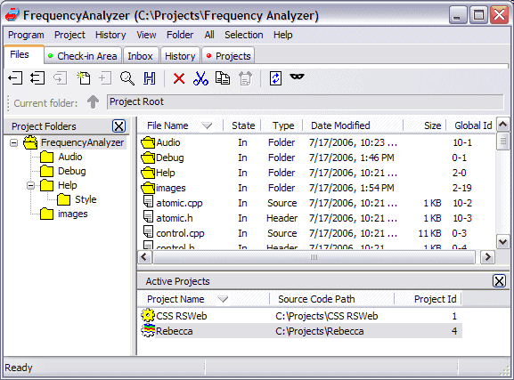

Toolbar buttons in the file area correspond to the following commands, from left to right.
In the File area, you can view files and folders that are in the project tree and not necessarily added to the project. This area corresponds to the file-system view of the project tree. Remember, files in the project can be also accessed directly from other applications, e.g., your editor or development environment.
You can now perform many functions from the tree pane including check-out, deep check-out, make uncontrolled, and more.
The lower pane, located below the file listing, lists all your currently active and recently visited projects. The project icon to the left of the project name uses the same visual cues as used in the Projects tab. This way you will know at a glance whether a project has a script requiring attention or whether you have files checked out.